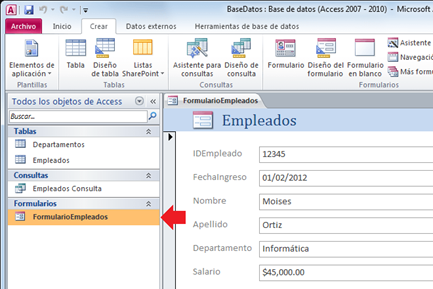
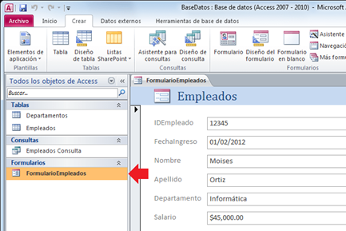

Diseño e implementación de base de datos
Formularios
Rellenar las palabras que faltan
Obra publicada con Licencia Creative Commons Reconocimiento Compartir igual 4.0

Obra publicada con Licencia Creative Commons Reconocimiento Compartir igual 4.0